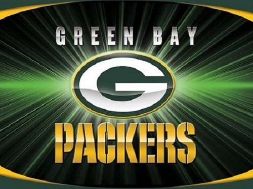

Hobbies
Sports
I always loved playing sports but unfortunatley now that I graduated high school I no longer play sports except I play basketball whenever I go to the gym. I still watch many sports and I'm a huge Packers fan. I'm a true "Wisconsinite", my favorite teams are the Packers, Bucks, Brewers, Badgers, and the Blackhawks just because Wisconsin doesn't have a hockey team.

Shoes
I started collecting shoes over the past 2 years. One reason I started collecting shoes is because I like all the different styles of shoes and having my own style. Also certain pairs of shoes have some history behind them and I find that interesting. The main reason i started collecting is because of the money that can be made in shoes. Depending on how rare the shoe is and what condition it's in, some shoes can resell for as much as x5 retail price.
- Jordan Retro 12 "Royal Blue"
- Jordan Retro 8 "Champion"
- Jordan Retro 3 "True Blue"
- Jordan Retro 11 "Snakeskin low"
- Jordan Retro 11 "Gamma Blue"
- Jordan Retro 8 "Chrome"
- Foamposites "Fighter Jet"